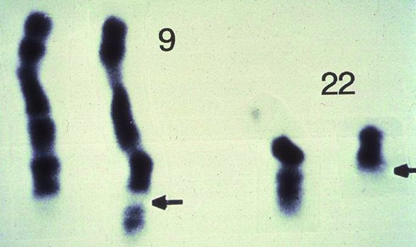

CML arises from a chromosomal abnormality. In other words, part of the DNA from one chromosome moves to another chromosome. Chromosomes are made up of proteins and DNA and they store the genetic material. In CML, there is a swapping, or translocation, of chromosomes. In this case, part of chromosome 22 moves to chromosome 9, causing chromosome 22 to be shorter (this is called the Philadelphia chromosome).
